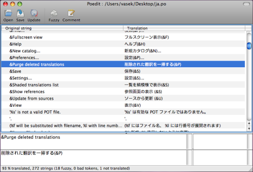

Интернационализация¶
Для интернационализации используется GNU gettext. В отличии от других программ, gettext поддерживает множественные числа.
Используйте интернационализированные сообщения непосредственно в коде¶
xitrum.Action наследуется от xitrum.I18n и предоставляет методы:
t("Message")
tc("Context", "Message")
t("Hello %s").format("World")
// 1$ and 2$ are placeholders
t("%1$s says hello to %2$s, then %2$s says hello back to %1$s").format("Bill", "Hillary")
// {0} and {1} are placeholders
java.text.MessageFormat.format(t("{0} says hello to {1}, then {1} says hello back to {0}"), "Bill", "Hillary")
t("%,.3f").format(1234.5678) // => 1,234.568
t("%,.3f").formatLocal(java.util.Locale.FRENCH, 1234.5678) // => 1 234,568
// Above, you explicitly specify locale.
// If you want to implicitly use locale of the current action:
// when English => 1,234.568, when French => 1 234,568
t("%,.3f", 1234.5678)
В других местах, вам нужно передать текущий контроллер что бы использовать t и tc:
// В контроллере
respondText(MyModel.hello(this))
// В модели
import xitrum.I18n
object MyModel {
def hello(i18n: I18n) = i18n.t("Hello World")
}
Извлечение сообщений в pot файл¶
Создайте пустой i18n.pot файл в корневой директории проекта, скомпилируйте проект.
sbt/sbt clean
rm i18n.pot
touch i18n.pot
sbt/sbt compile
sbt/sbt clean удалит все .class файлы, тем самым принудит SBT выполнить компиляцию всего проекта.
Поскольку после sbt/sbt clean, SBT выполняет обновление всех зависимостей,
вы можете ускорить процесс выполнив команду find target -name *.class -delete, которая удалит
все .class файлы в директории target.
После компиляции, i18n.pot будет заполнен сообщениями извлеченными из исходного кода. Такое поведение реализуется через плагин для компилятора Scala.
Единственный недостаток этого метода в том что сообщения извлекаются только из
исходного кода Scala. Если у вас используются java файлы, вам придется добавить сообщения
самостоятельно через командную строку используя интерфейс xgettext:
xgettext -kt -ktc:1c,2 -ktn:1,2 -ktcn:1c,2,3 -o i18n_java.pot --from-code=UTF-8 $(find src/main/java -name "*.java")
Затем вам необходимо объединить i18n_java.pot и i18n.pot.
Где сохранять po файлы¶
i18n.pot это шаблонный файл. Вы должны перевести его и сохранить как <язык>.po.
Xitrum отслеживает директорию i18n в classpath.
Файлы <язык>.po из этой директории загружаются во время работы приложения,
Xitrum автоматически перезагружает эти файлы если они изменились.
src
main
scala
view
resources
i18n
ja.po
vi.po
...
Используйте Poedit для редактирования po файлов. Вы можете использовать его для добавления новых pot файлов в po файл.

Вы можете поставлять po файлы в составе JAR. Xitrum автоматически объединит их при запуске.
mylib.jar
i18n
ja.po
vi.po
...
another.jar
i18n
ja.po
vi.po
...
Выбор языка¶
Для выбор языка согласно заголовку запроса
Accept-Language, используйте методbrowserLanguages. Результат выбора определяется согласно приоритету браузера.Язык по умолчанию устанавливается «en». Для смены текущего языка используйте присвоение переменной
language. Например, для русского языкаlanguage = "ru".Для выбора подходящего языка из доступных, используйте вызов
autosetLanguage(availableLanguages), гдеavailableLanguagesсписок доступных языков из директорииresources/i18nи JAR файлов. Если подходящего языка нет, будет установлен язык «en».Для получения текущего языка используйте
language.
В контроллере обычно объявляют пре-фильтр для установки языка:
beforeFilter {
val lango: Option[String] = yourMethodToGetUserPreferenceLanguageInSession()
lango match {
case None => autosetLanguage(Locale.forLanguageTag("ja"), Locale.forLanguageTag("vi"))
case Some(lang) => language = lang
}
}
Валидационные сообщения¶
Плагин jQuery Validation предоставляет возможности для интернационализации сообщений. Xitrum автоматически подключает файл с сообщениями подходящими для данного языка.
На стороне сервера для стандартных валидаторов из пакета xitrum.validator Xitrum предоставляет переводы.
Множественные числа¶
tn("Message", "Plural form", n)
tcn("Context", "Message", "Plural form", n)
Xitrum может работать с множественными числами представленными ниже:
Шаблон множественных чисел может быть одним из:
nplurals=1; plural=0
nplurals=2; plural=n != 1
nplurals=2; plural=n>1
nplurals=3; plural=n%10==1 && n%100!=11 ? 0 : n != 0 ? 1 : 2
nplurals=3; plural=n==1 ? 0 : n==2 ? 1 : 2
nplurals=3; plural=n==1 ? 0 : (n==0 || (n%100 > 0 && n%100 < 20)) ? 1 : 2
nplurals=3; plural=n%10==1 && n%100!=11 ? 0 : n%10>=2 && (n%100<10 || n%100>=20) ? 1 : 2
nplurals=3; plural=n%10==1 && n%100!=11 ? 0 : n%10>=2 && n%10<=4 && (n%100<10 || n%100>=20) ? 1 : 2
nplurals=3; plural=(n==1) ? 0 : (n>=2 && n<=4) ? 1 : 2
nplurals=3; plural=n==1 ? 0 : n%10>=2 && n%10<=4 && (n%100<10 || n%100>=20) ? 1 : 2
nplurals=4; plural=n%100==1 ? 0 : n%100==2 ? 1 : n%100==3 || n%100==4 ? 2 : 3